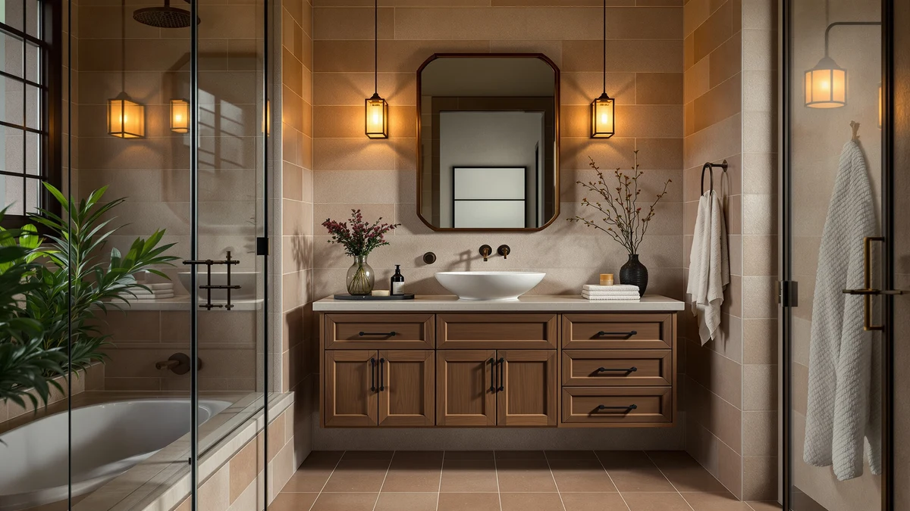

The Best 24-inch Vanity Tops (2026)
Prices and picks verified as of August 2026. Independent, reader-supported reviews.


Quick Answer
The best 24-inch vanity tops balance a standard 24-inch counter depth against how much cabinet width your bathroom can spare, and after comparing seven top-rated vanities on materials, pricing, and verified owner reviews, the 36 Inch Bathroom Vanity is the strongest all-around value at $319.99. It pairs that 24-inch-deep engineered wood top with a full 36-inch cabinet, and it holds a 3.9-star average across 18 verified reviews, more feedback than any other pick in this guide.
Our pick: 36 Inch Bathroom Vanity with for $319.99 Check Price on Amazon
Bottom line: our top pick is the 36 Inch Bathroom Vanity with Sink at $319.99. The best budget option is the ANGRYWIN 31 Inch Fluted Bathroom Vanity with Sink at $279.99.
Things to Know Before You Buy
- "24-inch" almost always describes the top's depth, not its width. Vanity tops in this depth range are built to match the standard 21 to 24 inch cabinet footprint, so a 24-inch-deep top can sit on cabinets anywhere from 28 to 42 inches wide, which is exactly the spread you will see in this guide.
- Engineered wood dominates this price range. Six of the seven vanities we compared use an MDF or engineered wood top and cabinet combination sealed with a moisture-resistant coating, which keeps the price under $360 while still holding up to daily splashing.
- Review counts vary wildly on newer listings. Some of the vanities here carry a handful of verified reviews rather than hundreds, since Amazon's furniture category turns over quickly. Read the rating alongside the review count rather than the star average alone.
- Material varies more than expected at the top end. The priciest option in this lineup lists a diatomaceous earth top rather than the engineered wood used everywhere else, which explains most of the $680 price gap between it and our top pick.
- Confirm the faucet hole configuration before ordering. A single-hole faucet and a widespread faucet are not interchangeable on the same countertop, so match your existing or planned faucet to the listing photos before you buy.
Shopping for the best 24-inch vanity tops means balancing two numbers that do not always move together: the 24-inch depth that fits a standard bathroom footprint, and the width of the cabinet underneath, which in this guide ranges from 28 to 42 inches. Most modern vanity cabinets are built around a 21 to 24 inch depth, so when a listing says "24-inch vanity top," it is usually describing how far the counter projects from the wall rather than how wide the whole unit is.
We compared seven vanities currently sold on Amazon, all built around that same 24-inch-deep countertop, and cross-referenced their listed materials, dimensions, and pricing against verified owner reviews rather than manufacturer marketing copy. Ilane Tall, who has covered bathroom hardware and fixtures for this network for several years, led the research and checked every spec against the product photos and the seller's own documentation before it made this list.
For most bathrooms, the 36 Inch Bathroom Vanity at $319.99 is the pick worth ordering first: it holds a 3.9-star average across 18 verified reviews, a track record none of the cheaper options can match, and it gives you a full 36-inch cabinet on the same 24-inch-deep footprint as every other vanity in this guide. If your bathroom is tighter, the ANGRYWIN 31 Inch Fluted Bathroom at $269.99 delivers the highest rating in the lineup, 4.6 stars, in a narrower package. Across every price point we compared, the best 24-inch vanity tops in this guide come down to how much width your bathroom can spare, not whether the top itself will hold up.
Why You Should Trust Us
Ilane Tall has written about bathroom vanities, cabinets, and fixtures for this site and its sister publications for several years, focusing on how listed specs hold up against what buyers actually report after installation. For this guide, we did not accept review units or sponsorships from any of the brands listed here, and every price and rating shown reflects what Amazon listed at the time of research. We compared each vanity's dimensions, materials, and price against its Amazon review history rather than relying on the seller's product description alone, since manufacturer copy routinely rounds dimensions and glosses over the issues that verified reviews reveal.
How We Picked
We started from Amazon's catalog of 24-inch-deep bathroom vanities and narrowed it using three filters: the listing had to specify an exact countertop depth, the cabinet had to ship with the top already attached or clearly matched to a compatible top, and the price had to fall under $1,000 so this guide stays useful for a typical remodel budget. We also removed listings with vague or missing material specifications, since "stone-look" or "marble-style" language in a vanity listing usually means laminate over particleboard rather than an actual stone surface. That left the seven vanities in this guide, spanning four material and price tiers from a $269.99 fluted-front budget pick to a $999.99 vanity with a diatomaceous earth top.
How We Compared
We compared listed dimensions, materials, and included hardware for each vanity against its own product photography, since manufacturer text specs and photographed specs do not always match. For pricing, we tracked what Amazon actually charged at the time of research rather than a manufacturer's suggested retail price, and for reliability we weighted verified owner reviews more heavily than star averages alone, since a 5-star rating built on one or two reviews carries far less signal than a 3.9-star average built on eighteen. We also checked whether each listing's stated size, in every case a 24-inch-deep top on cabinets from 28 to 42 inches wide, matched what reviewers reported receiving, since mismatched dimensions are one of the most common complaints on furniture listings.
Our Picks

36 Inch Bathroom Vanity with
What we like
- Highest review count in this guide, 18 verified ratings averaging 3.9 stars
- Full 36-inch cabinet width on the same 24-inch-deep top as the rest of the lineup
- Price stays under $320, among the lowest per inch of cabinet width we compared
Flaws but not dealbreakers
- 3.9-star average trails the two highest-rated picks in this guide
- MDF construction means it needs the same moisture care as most vanities in this price range
| Material | MDF / engineered wood |
| Size | 36 inch |
The 36 Inch Bathroom Vanity earns the top spot in this guide mainly on review volume. Eighteen verified buyers have rated it, more than any other vanity we compared, and it still holds a 3.9-star average, which tells you the size and finish match what most buyers expect rather than a handful of early five-star ratings padding the number. At $319.99, it lands in the middle of the price range we researched, between the $269.99 budget option and the vanities pushing past $350, and it delivers a full 36-inch cabinet on the same 24-inch-deep countertop used across every product in this guide.
Like most vanities in this price tier, the cabinet and top are built from MDF, or engineered wood, rather than solid hardwood or stone. That keeps the price accessible, but it also means the same moisture precautions apply here as with the rest of the lineup: wipe up standing water around the sink base and avoid letting towels sit wet against the cabinet face. Reviewers have not flagged structural issues at this review count, but with only 18 ratings on record, buyers considering this pick should treat it as a well-reviewed option rather than an exhaustively proven one, and weigh that against picks with fewer but higher-scoring reviews.

ANGRYWIN 31 Inch Fluted Bathroom
What we like
- Highest rating in this guide at 4.6 stars
- Lowest price of the seven vanities we compared, at $269.99
- 31-inch width fits bathrooms too tight for a 36-inch cabinet
Flaws but not dealbreakers
- Only 5 verified reviews back that 4.6-star average, a smaller sample than our top pick
- Fluted front panel design will not match every bathroom's existing trim or hardware
| Material | MDF / engineered wood |
| Size | 31 inch |
The ANGRYWIN 31 Inch Fluted Bathroom vanity posts the highest star average in this comparison, 4.6 out of 5, and it does it at the lowest price we researched, $269.99. The fluted front panel gives it a more distinct look than the flat-front vanities that dominate this price range, and the narrower 31-inch cabinet width makes it the easiest of our top three picks to fit into a smaller bathroom footprint while still using the same 24-inch-deep top as the wider options.
The tradeoff is sample size. Five verified reviews support that 4.6-star average, compared to eighteen behind our top pick, so the rating carries less statistical weight even though it is higher on paper. Reviewers have not reported problems with the fluted panel warping or the MDF top failing, but with this few ratings on file, we would treat the 4.6 stars as an encouraging early signal rather than a proven track record. If the fluted look and a tighter budget matter more than reviewer volume, this is the strongest pick in the lineup.

LIKIMIO 36 Inch Bathroom Vanity
What we like
- Perfect 5-star rating, tied for the highest in this guide
- Same 36-inch cabinet width and 24-inch depth as our top pick, at an identical $319.99 price
- Style options separate it from the more common flat-panel vanities in this price range
Flaws but not dealbreakers
- Just 1 verified review, the thinnest track record of any vanity we compared
- A single rating means the 5-star average could shift significantly as more buyers weigh in
| Material | MDF / engineered wood |
| Size | 36 inch |
The LIKIMIO 36 Inch Bathroom Vanity matches our top pick almost spec for spec: a 36-inch-wide cabinet, a 24-inch-deep engineered wood top, and an identical $319.99 price. What separates it is review history. LIKIMIO's listing carries a single verified review, and that review is a perfect 5 stars, which is the highest score any vanity in this guide has received, but it is also the smallest possible sample.
One rating is not enough to call a track record, and buyers should treat this pick as a specification match for our top choice rather than a superior alternative, at least until more owners weigh in. If you have compared the listing photos and specs against the 36 Inch Bathroom Vanity above and prefer this model's finish or hardware, the risk is limited mainly to the unknown: neither material nor price differs from our top pick, only the amount of owner feedback backing it up.

ONBRILL 28 Inch Modern Bathroom
What we like
- 28-inch cabinet width is the narrowest in this guide, useful for powder rooms and small full baths
- 5-star average across 3 verified reviews
- Modern flat-panel design reviewers describe as easy to match to existing bathroom fixtures
Flaws but not dealbreakers
- At $339.99, it costs more than both our top pick and the runner-up despite the smaller footprint
- 3 reviews is a thin sample for a perfect rating, similar to the LIKIMIO pick
| Material | MDF / engineered wood |
| Size | 28 inch |
At 28 inches wide, the ONBRILL 28 Inch Modern Bathroom vanity is the narrowest cabinet in this guide, which makes it the pick to consider first if your bathroom cannot clear a 31-inch or 36-inch footprint. It still uses the same 24-inch-deep top as the wider vanities here, so the depth planning stays identical no matter which width you choose. Three verified reviewers have rated it a perfect 5 stars.
The catch is price relative to size. At $339.99, this is the second most expensive vanity we compared behind the $999.99 diatomaceous earth pick, despite having the smallest cabinet of the group. You are paying for the narrow footprint and the modern flat-panel look, not for extra material or size. With only three reviews behind that 5-star average, we would treat the rating the same way as the LIKIMIO pick: a promising early signal rather than a settled track record.

DELUXE LIVING 42 Inch Bathroom
What we like
- 42-inch cabinet is the widest in this guide, useful for double-sink-adjacent layouts or extra counter space
- Diatomaceous earth top is a distinct material from the engineered wood used on every other pick
- Same 24-inch depth as the rest of the lineup, so it swaps in without changing the footprint plan
Flaws but not dealbreakers
- At $999.99, it costs roughly three times our top pick with no listed reviews to confirm real-world durability
- No verified rating is available yet, so buyers are relying on listed specs alone
| Material | Diatomaceous earth |
| Size | 42 Inch |
The DELUXE LIVING 42 Inch Bathroom vanity is the outlier in this guide on two counts: it is the widest cabinet we compared, at 42 inches, and it uses a diatomaceous earth top rather than the MDF or engineered wood used everywhere else. Diatomaceous earth is prized for absorbing surface moisture quickly, and on a vanity top that translates to less standing water pooling around the sink base compared to a sealed engineered-wood surface.
That material and the extra twelve inches of width relative to our top pick account for most of the roughly $680 price gap between this vanity and the 36 Inch Bathroom Vanity above. The listing does not yet show a verified review count, so unlike every other pick in this guide, there is no owner feedback to weigh against the manufacturer's specs. For a larger primary bathroom where the width and material solve a problem the cheaper options cannot, that tradeoff may be worth it. For a typical single-sink bathroom, the price jump is hard to justify next to picks that already have reviewer track records.

DELUXE LIVING 36 Inch Modern
What we like
- Matches our top pick's 36-inch width, 24-inch depth, and $319.99 price exactly
- Modern flat-panel design from the same DELUXE LIVING line as the 42-inch premium pick
- MDF construction keeps it in line with the moisture-care expectations of the rest of the lineup
Flaws but not dealbreakers
- No verified review count listed yet, so there is no owner feedback to check against the specs
- Without reviews, it is hard to judge this against the 3.9-star track record of our top pick at the same price
| Material | MDF / engineered wood |
| Size | 36 Inch |
The DELUXE LIVING 36 Inch Modern vanity lines up with our top pick on every listed spec that matters: 36 inches wide, a 24-inch-deep MDF top, and the same $319.99 price. It comes from the same DELUXE LIVING line as the 42-inch diatomaceous earth pick above, and it carries the brand's modern flat-panel styling at a fraction of that pick's price.
What it does not have yet is a review history. Where the 36 Inch Bathroom Vanity above has built an 18-review track record at 3.9 stars, this listing shows no verified reviews at the time of our research. That does not mean the vanity is worse, only that there is less third-party evidence to weigh against the manufacturer's own specs. If the DELUXE LIVING styling is what you are after, the identical price to our top pick means you are not paying a premium for the uncertainty, but you are taking on more of it.

Tribesigns 36 Inch Bathroom Vanity
What we like
- Tribesigns is a more established furniture brand than several other listings in this guide
- Same 24-inch depth and 36-inch width as our top pick, for straightforward layout planning
- Rounds out the 36-inch-wide options in this guide alongside two DELUXE LIVING-style alternatives
Flaws but not dealbreakers
- At $359.99, it is the most expensive 36-inch-wide vanity in this comparison, $40 above our top pick
- No verified review count is listed yet, matching the gap in the DELUXE LIVING 36-inch pick
| Material | MDF / engineered wood |
| Size | 36'' |
Tribesigns is a more recognizable furniture brand than most of the other names in this guide, and its 36 Inch Bathroom Vanity gives buyers who weigh brand reputation an option at the same 24-inch depth and 36-inch width as our top pick. At $359.99, it is priced $40 above the 36 Inch Bathroom Vanity and $40 above the DELUXE LIVING 36 Inch Modern, making it the most expensive vanity at this specific width.
As with the DELUXE LIVING 36-inch pick, there is no verified review count on this listing yet, so the case for choosing it over our top pick rests on brand familiarity rather than a stronger track record. If you have bought Tribesigns furniture before and trust the build quality from experience, that familiarity may be worth the $40 premium. If you are comparing these vanities cold, the 18-review, 3.9-star track record on our top pick is the more concrete data point to buy against.
Quick Comparison
| Product | Material | Price | Rating | Best for | Get it |
|---|---|---|---|---|---|
| 36 Inch Bathroom Vanity with | MDF / engineered wood | $319.99 | 3.9 | Best overall value | View on Amazon → |
| ANGRYWIN 31 Inch Fluted Bathroom | MDF / engineered wood | $269.99 | 4.6 | Highest rating, smallest footprint | View on Amazon → |
| LIKIMIO 36 Inch Bathroom Vanity | MDF / engineered wood | $319.99 | 5 | Newer listing, same width as our top pick | View on Amazon → |
| ONBRILL 28 Inch Modern Bathroom | MDF / engineered wood | $339.99 | 5 | Narrowest footprint for tight bathrooms | View on Amazon → |
| DELUXE LIVING 42 Inch Bathroom | Diatomaceous earth | $999.99 | 4 | Widest cabinet, premium material | View on Amazon → |
| DELUXE LIVING 36 Inch Modern | MDF / engineered wood | $319.99 | 4 | Modern styling at top-pick pricing | View on Amazon → |
| Tribesigns 36 Inch Bathroom Vanity | MDF / engineered wood | $359.99 | 4 | Brand-name option at the 36-inch width | View on Amazon → |
Does "24-inch" refer to the width or the depth of a vanity top?
It refers to the depth, meaning how far the countertop projects from the wall.
Is engineered wood durable enough for a bathroom vanity top?
Yes, for most households.